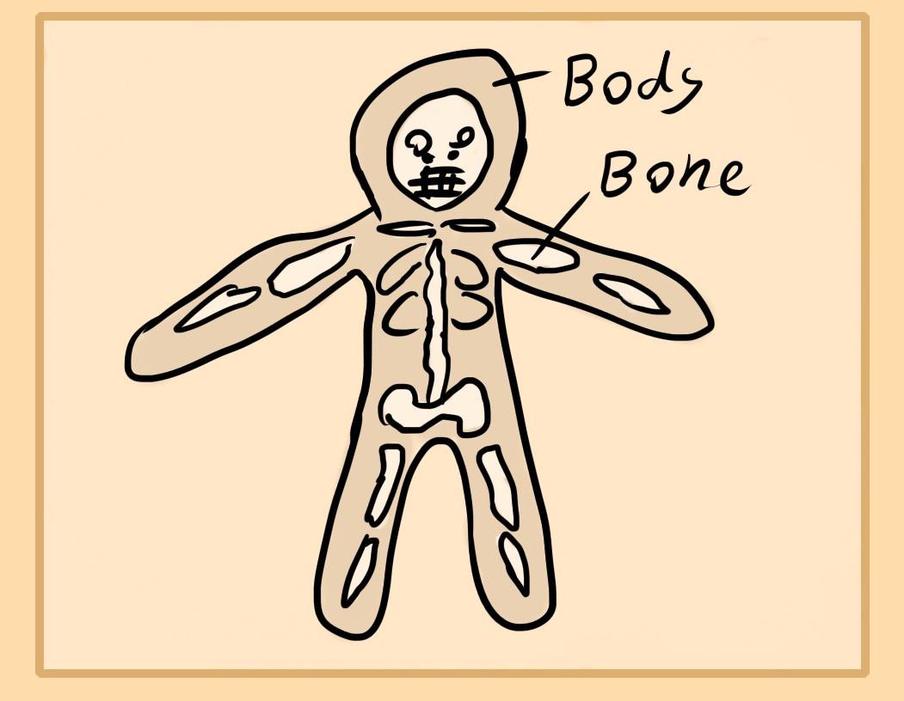

Now that we've gone over external meditations, its time to cover internal ones of the bones and nerves.
The bones and nerves are considered yin.
Bone Meditation
This meditation can be performed standing or sitting. Get comfortable and begin meditation. Start to focus inward towards the central areas of your body. Feel for the most dense and hard parts. These are your bones. You'll want to keep focus on them. Don't tense or strain. Just keep your focus there. You may begin to feel your bones "light up" energetically. This meditation can aid in bone problems.
Nerve Meditation
Similarly as the last meditation, relax and sit, then feel inward to your nervous system. Feel the spinal cord, the brain and try to expand outward from this area.
If too much stress is used, you may feel overly hot, in pain or sensitive. Though, sometimes stagnant nerve toxins are being released. Similarly you may notice some blocks which slowly open up.
This meditation aids in helping your nerves and spinal issues. You may be able to regain some function in time.
Circulation Meditation
Figure I will share this one as well just to make sure that you know it.
This one relies on you feeling out the heart and then feeling the arteries and blood vessels throughout your body. Then you can enhance the circulation speed or pressure if you want.
This one is used for circulating alchemical drugs faster or clearing arterial blockages.